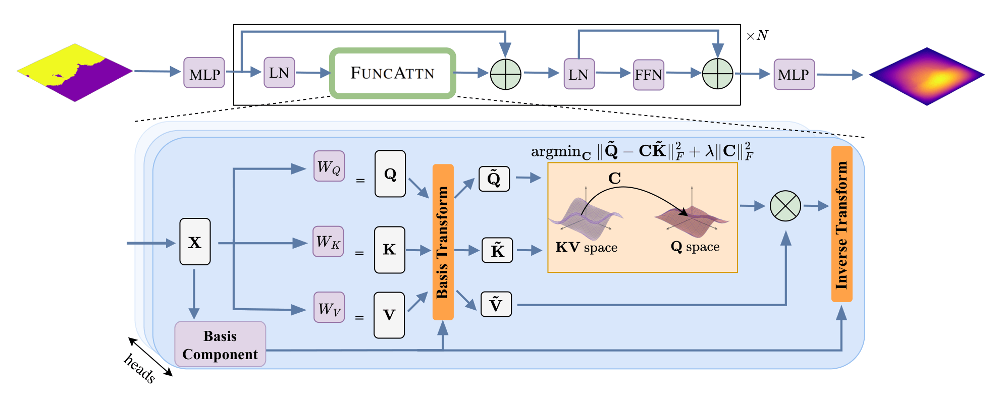
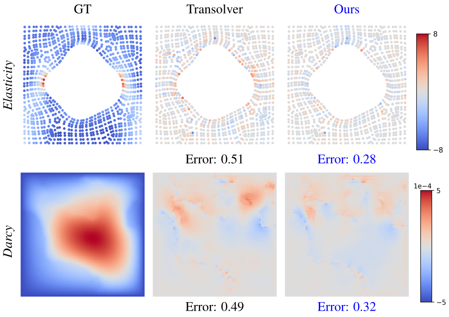
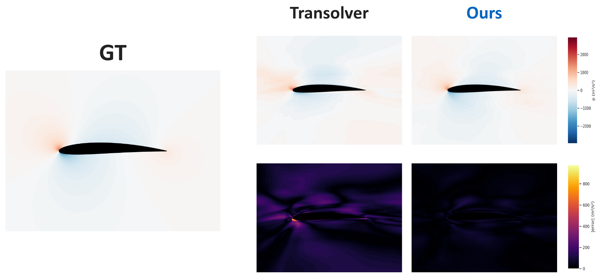
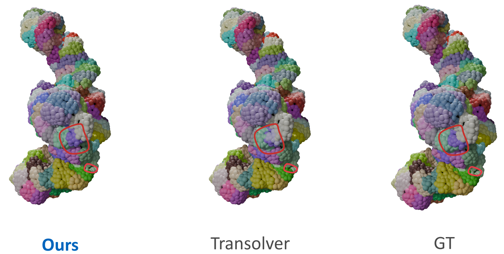
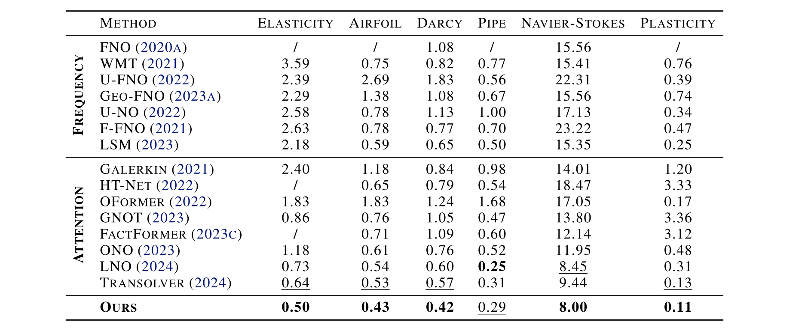
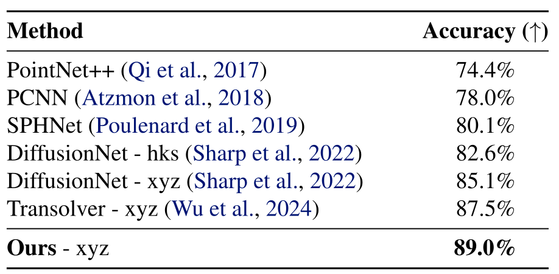
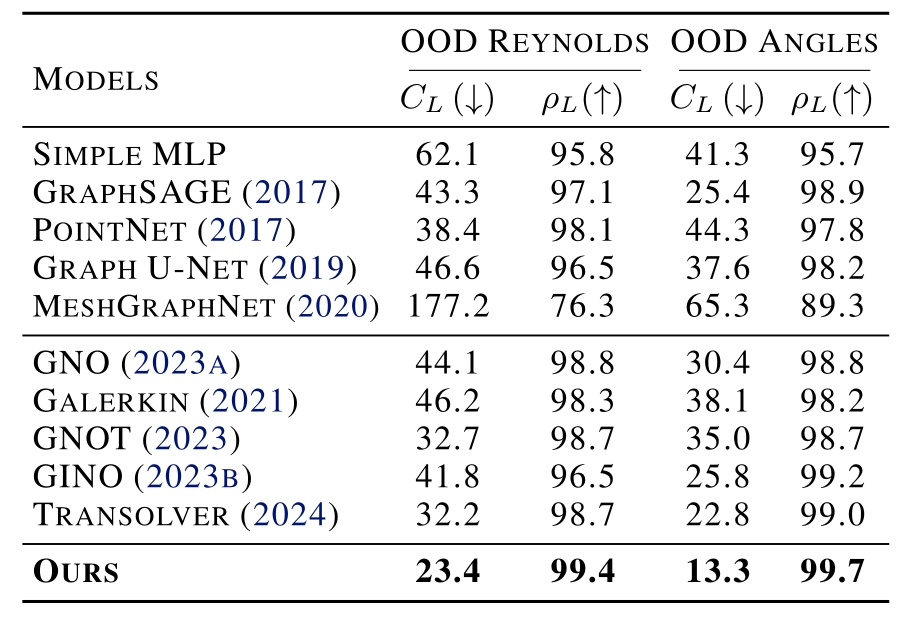
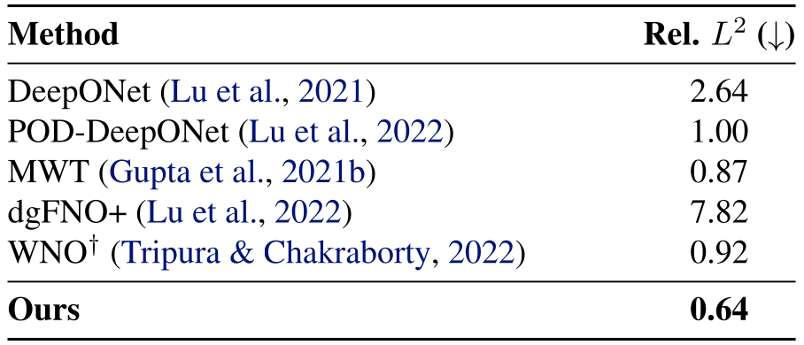

Functional Attention(FuncAttn) reinterprets attention as a functional correspondence between learned bases. Queries, keys, and values are projected into a compact spectral space, where a regularized least-squares solve yields a k×k linear operator that transports information between two spaces, reducing complexity from O(n2) to O(k3) with k ≪ n..
Abstract
Learning mappings between infinite-dimensional function spaces, or operator learning, is essential for many machine learning applications. Although transformer-based operators are popular, they often rely on token-wise attention. These methods treat continuous fields as discrete tokens and usually ignore the global functional structure. We introduce Functional Attention, which reinterprets attention as a functional correspondence between adaptive bases. Inspired by geometric functional maps, our method replaces softmax affinities with structured linear operators. This yields a compact, generalizable, resolution-invariant representation that explicitly captures global dependencies. Experiments demonstrate that Functional Attention can match state-of-the-art performance in many operator learning tasks, including solving PDEs, 3D segmentation, and regression, while remaining robust to varying discretizations.

Ground truth and error maps for Elasticity and Darcy benchmarks. (relative L2 ×100)

OOD generalization on the airfoil dataset. Our method generalizes to unseen Reynolds numbers while maintaining smooth and accurate predictions.

Qualitative comparison of RNA surface segmentation. Red circles highlight regions where our method more faithfully recovers the ground-truth segmentation than Transolver.
Evaluation
PDE Benchmarks
We report quantitative results on PDE benchmarks. Relative L2 loss to ground truth (×100, ↓) is reported. The best results are in bold and the second best are underlined; “/” indicates that the method is not applicable. Our method, FuncAttn, reaches state-of-the-art results and outperforms prior methods on almost all datasets.

RNA Point Cloud Segmentation
We evaluate on RNA point cloud segmentation, where “xyz” and “hks” indicate whether the network input is the xyz coordinates or heat kernel signatures. Our method achieves the best segmentation accuracy.

OOD Generalization on AirfRANS
We report out-of-distribution (OOD) generalization on AirfRANS. The relative error of the lift coefficient (CL, %) and the Spearman’s rank correlation (ρL, %) are reported, with all values scaled by 100. Our method achieves the best generalization performance on both OOD Reynolds and OOD Angles settings.

2D Darcy Flow with a Triangular Notch Domain
We further evaluate on 2D Darcy flow with a triangular notch domain. Relative L2 error (%, ↓) is reported; † denotes our reproduction using the released code under a comparable parameter budget. Our method achieves the best performance on this singular-domain task.

Poster
BibTeX
@misc{xiao2026functionalattentionpairwiseaffinities,
title={Functional Attention: From Pairwise Affinities to Functional Correspondences},
author={Jiefang Xiao and Maolin Gao and Simon Weber and Guandao Yang and Daniel Cremers},
year={2026},
eprint={2605.31559},
archivePrefix={arXiv},
primaryClass={cs.LG},
url={https://arxiv.org/abs/2605.31559},
}